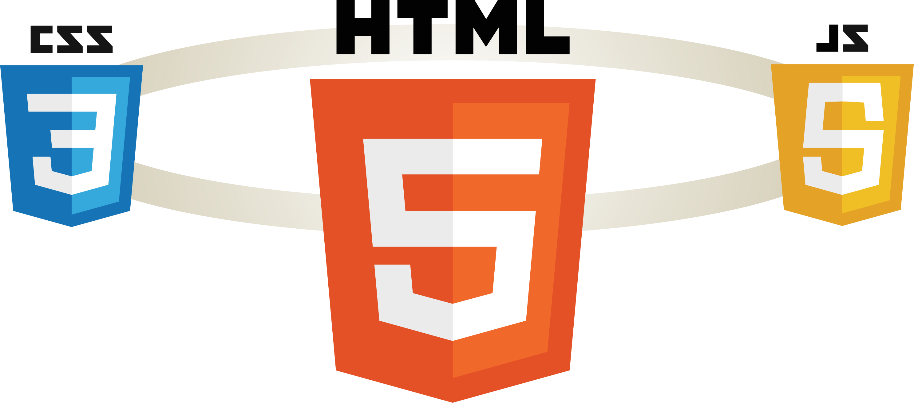

A report from the course DA377B Software Development for the Web VT20
S01
My very first course was on Khand Academy platform and it was about on of the JavaScript library which use on HTML canvas for drawing. The purpose of the course was to learn programming and not related directory to the web development and my few next courses were taken before starting in Kristianstad Högskola were Web Utveckling & Web Server Programmering for the Swedish secondary school level. The clock below is one of my first trainning project
I learn a little about Html, CSS, JavaScript, php and SQL and as one of the assignments for those courses I had to build a website both static and dynamic and learn how to send and receive data from and to database using PHP. Since I start my study in Kristianstad Högskola I became far from the web development domain since all our previous courses isn't related directly to the web development.
This course is a great opportunity to restore and add new to my previous information since I never worked with any framework. Specifically, for this section I will try to figure out the whole picture and decide which skills I have to mastered, but in general my interesting is on the backend part.
I learnt to use Git & GitHub but since I'm a person who prefer to deal with GUI, I rarely worked with command line. My knowledge in Git & GitHub doesn't go deep, I assume that I understand and implement the basics push, pull, commit but still have to make some effort and read document behind those, So the Markdown and GitHub pages are new concepts to me..
S02
During my previous Webutveckling course, I learnt a little about the three basic languages for any web developer, but my knowledge never exceed the course learning since I didn’t practice well, so every time I try to create a webpage I have to return to the documentations.
HTML is a short for Hypertext Markup Language. It’s the language which used to create a website and it’s the basic structure for every page on the web. HTML isn’t exactly programming language, but it used to show images, links, text among others which the page contains. CSS is a short for Cascading Style Sheets, it is a style language which used to decorate a document written in HTML. CSS is the main way to create an attractive website. JavaScript is the 3rd language of the three basic languages for web developing. It used to create the interactivity of the website.

The browser and the web server communicate through HTTP protocol, a browser as the web server for a specific information and the server respond with the proper content
Since I do not intend to become a web developer, my goal in this section is to remember what I know about the three languages, and to preserve what it takes to be able to survive as a backend developer.
S03
Since I have a little experience about javascript and it is all about client side. My previous experience
My abilities to compare JavaScript with java is limited due to the lack of knowledge in javascript but from what I know I can define some points.
Java could be used almost everywhere while JavaScript major use is in web front end, Java is much easies to read and understand since there is a class concept which seems is not exist in JavaScript. Java has more focus on defining the data type while JavaScript seems doesn't care at all. Java executes bytecode in a JVM while JavaScript is interpreted and which is in many ways effect the performance.
For this course I intend to got grade 5, I prefer to start working on my own & not using the example until I have to. The intersting and most interesting part was to fetch the data from the mentioned school API. I knew that is not mandotory to fetch it directly from the API but I accepted as a challnge and I implmented it where the municipality name and code get also from the API so all municipalites and schools could be fetch through the page school.
For the duck game I like to make the duck draggable so the user could move it around, and I intend to add extra feature and function
For this course I want to expand my understanding to the Javascript language, some difficulties I faced during fetching the data by reading the documentations to understand how the fetch request work, and how the javascript has similar thread function which used the word then. I expect to establish enough knowledge in order to avoid complex problem when we reach to Node.js and other Javascript library and framework
S04
To begin with: my experience in node.js, Express.js npm was zero before this section, and to be honest I'm still so far to understand and to be comfortable with Javascript syntax. The only closed service I worked before was Java EE, Jersey library and my experience in that library is also not deep
Working with the three mentioned library is good for someone who has mastered the Javascript language, but for me it's a torture, I faced a lot of problems because of the short time to learn about Node, Express and npm and becasue the lack of knowledge in Javascript. The debugging was hard to me, Specifically between the server and client side mistakes, I wish I do a tutorial before I start the course, at least to memorize my info and to learn more about Javascript in server side.
This coding assignment was until now the most difficult one, I walk through the tutorial step by step but there are a lot of details, so in my submission I start from the teacher example and copy the code, then modified it and tried to understand each piece of code, for the grade 3 the suggested example was enough to do it, but the grade 4 requierments, required me to some research and tutorial in order to understand some issues, I'm still working on the grade 5 requierments, since it's the grade that I seek for.
In the future and for the importance of Node and other Javascript backend framework, I intend to deep my understanding & skills in this field.
S05
PHP for me is totally new language, even I try it before but it still so strange, some code syntax and other function is totally diffrenet from other language that I know. Some expression like <<<EOD and then some text and then EOD again, the other expression is this one $var and then ?? this two question marks. So in every step during this section I struggle to understand the language.
The other part while writing the 'While' loop which should end by 'End While' and the same for if else statment. All these make PHP so bizzared for me and the diff between PHP and Java till example is much bigger than Java & JavaScript
I always seeking grade 5, I found it hard to understand and implment the php code by it self so I start my assignment by create a real website http://websoft-course.000webhostapp.com/work/php/ and create a database there cause I have some problems in running the Xampp server on my PC. Then I starting getting results from the database using PHP code and then add the feature of Update, Delete, Create and Search, improve the header & footer. and then clean the and enhance the PHP code to be more dynamic.
Since I'm interested in the backend developing, I found PHP is very potentiol for my carrier but I need more paractic to involve in it. For this section, I face a lot of problem understanding the php examples, and the reason for some expression such as "include", "require" and some of what I mentioned before, the structure of php seem messy a little bit, where you can call function without similar "import" method as Java, but it's a mature of time before I used to deal with it.
S06
The programming languages are tools to achieve works, according to how a person can be good in using a tool to achieve more, so it doesn't matter how much the programming language is popular as long as it do the job in proper way. On the other hand, the market demand on a specific programming language push me to add it to my portfolio, but to be in the safe side, I should learn three to four out of the ten most popular programming languages. The new programming languages take long time before got a rank among the top ten or even twenty, and example for that, two programming languages which seem to be very promising, but still behind such as Go & Kotlin.
So in my opinion unless a new revolutionary language appear nothing will change in the near future. In selecting future programming languages, I can classify my abilities with Java, C# as my first choice, PHP, JanvScript and SQL as my seconde.
Since I mention Kotlin and how promising could be, I make a comparsion using google trend between Java, JavaScript and Kotlin, the reason of chosing those three languages is That Kotlin could replace Java and JavaScript code easily as I understand, but the trends show that Kotlin struggling to get place among the giants
The table below show comparsion on 12 months based
The table below show comparsion on 5 years based
If you were to recommend a language/framework/technology to your potential employer and your next large project, what would it be and how would you “sell it”?
To be in the safe side I will recommend the most popoular languages, but I will be careful to choose framework, for much I understand, some framework are not popular any more so any choice well not involve any risk for the future to find enough developer to do the work, so to divide the demand of next large project I'll choose Java, C# or php for any back-end part, pure JavaScript for the website part, NodeJS & Javascript could be possiable solution.
I found google trend is useful method to do some research, my languages and framework must be diversified to be competitive and develop my profession.
S07
.NET is a cross platoform to build almost every type of application, it kind of a container for many frameworks. The .Net community is supported by Microsoft so it is very powerful and developing all the time.
.NET is wide technology compare to what we learn until now, I guess it combine a lot and for that, as I understand php, javascript (pure), NodeJs and other technology that I learnt in some case is set to have one goal back-end, front-end but :Net looks like an umbrella which group many under it.
For this excersice I started with the console application which seem to be much easier since I worked before with C# from the Unity Game-enginge, the I moved to the webApp, creating API using .Net technology is simple and much like what we learnt in Java, but I confused when working on the .Net technic which contain some new feature and as Razor
The time to learn the new technology is short, I learnt a lot, but still feel that I need to restart again in order to arrange my information from A to Z not only to achieve the grade that I seek to which is 5.
S08
Here is the text for this section.
S09
Here is the text for this section.
S10
Here is the text for this section.